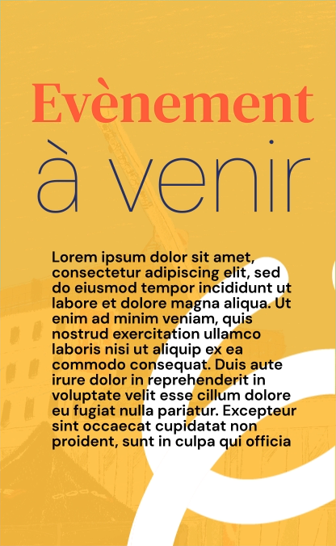
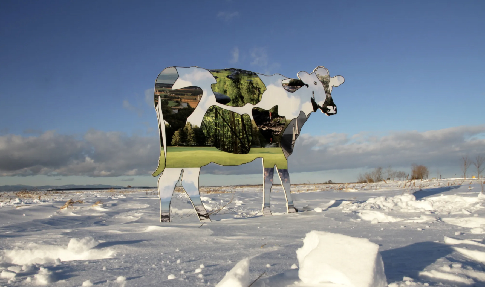
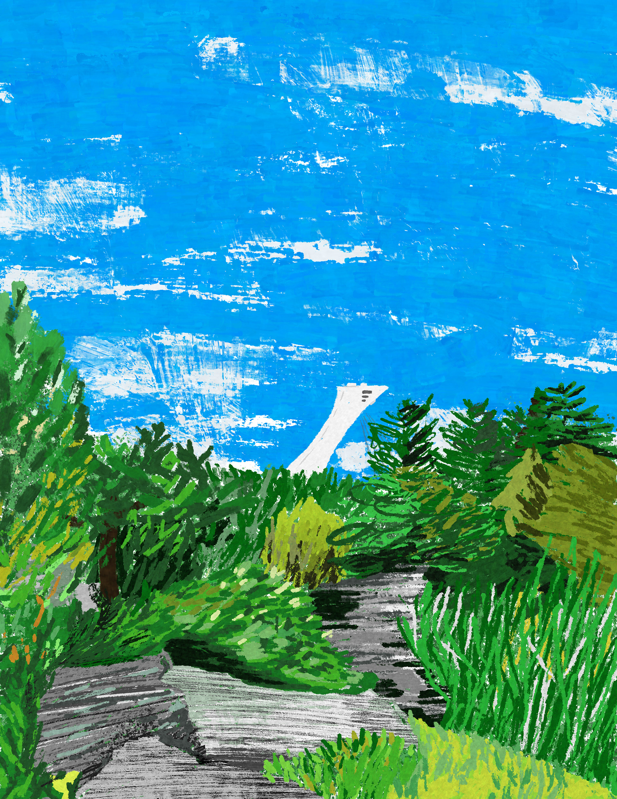
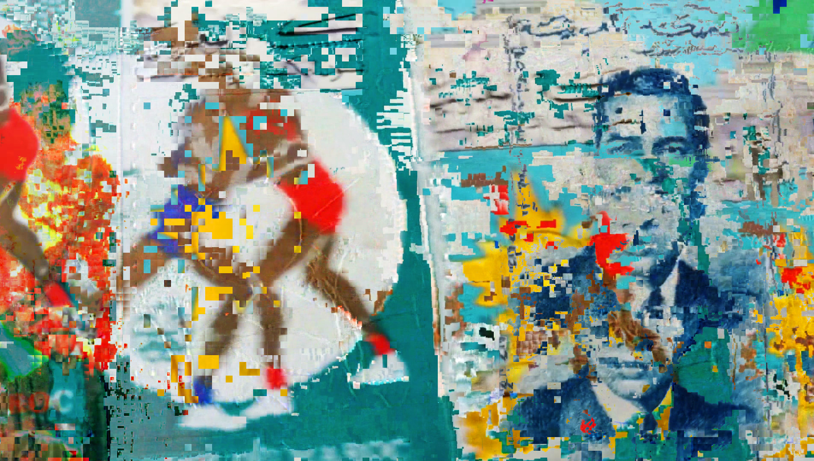
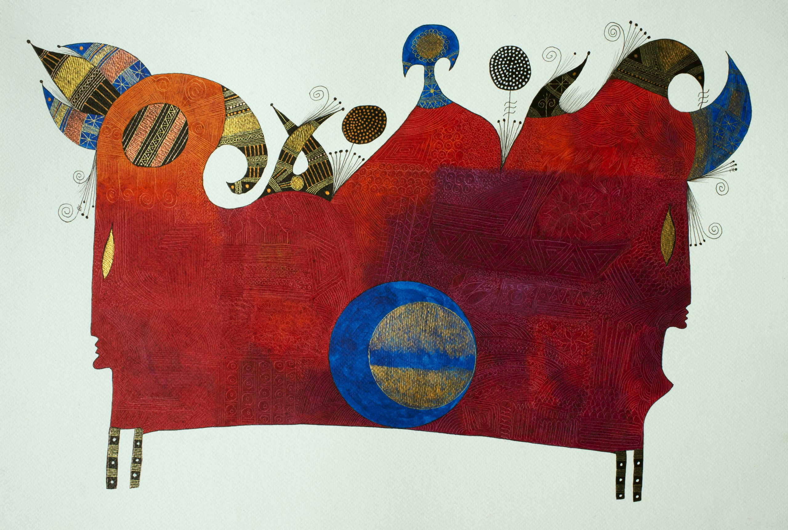

Présenté par Jaxa production
Façade interactive
Un lieu d'accueil vivant
sur le boulevard Décarie

Tissage
de vies
La façade devient le premier lieu d'accueil chaleureux et vivant du CARI, visible dès le boulevard Décarie.
Une expérience positive et mémorable pour la clientèle, les passants et les familles.
Un espace de dialogue entre les cultures, en cohérence avec la mission d'accueil du CARI.
Un espace culturel et artistique pour le quartier, qui fonctionne de jour comme de soir.
Composantes
de l'installation
Fenêtres animées
L'installation de fenêtres animées à film LED transparent sur la façade du CARI St‑Laurent permet de renforcer la visibilité, l'accueil et la communication de l'organisme, tout en préservant la qualité architecturale et lumineuse du bâtiment.
Plus de détailsCarillon de trottoir
Cette œuvre sonore interactive installée sur le trottoir agit comme un véritable appel : elle intrigue les passants, les amène à ralentir, à s'arrêter, à regarder la façade et, potentiellement, à entrer. Le carillon rend le temps d'attente plus agréable.
Plus de détailsL'expérience
en mouvement
Animation de l'immeuble
Façade — gros plan
Fenêtres
du Québec
Le CARI St‑Laurent a pour mission d'accueillir, d'aider et d'accompagner les personnes immigrantes dans leur intégration au Québec. Avec les Fenêtres du Québec, nous ouvrons symboliquement des fenêtres sur le pays que ces personnes découvrent et s'approprient.
Lieux de vie
La nature et les saisons

Les habitants et les langues

Services et événements
Artistes issus
de l'immigration
Les contenus des fenêtres seront l'œuvre d'artistes visuels qui vivent au Québec, qui parlent le français. Des créations d'œuvres originales en résonance avec la mission du CARI St-Laurent.

Pilar Macias
Mexique Voir le portfolio
Eunki Kim
Corée du Sud Voir le portfolio
Marwan Sekkat
Maroc Voir le portfolio
Khosro Berahmandi
Iran Voir le portfolioSimple.
Robuste.
Économe.
Film LED transparent
Un film LED transparent, découpé sur mesure à la taille des fenêtres, transforme la façade en surface d'affichage vivante tout en conservant la transparence et l'apport de lumière naturelle. Les fenêtres deviennent ainsi un support discret mais spectaculaire pour des contenus visuels évolutifs.
Serveurs Raspberry Pi
Des micro‑serveurs Raspberry Pi, fiables, économiques et faciles à remplacer, pilotent les contenus de chaque fenêtre. Ils permettent de changer les visuels à volonté (saisons, événements, campagnes) sans modifier l'infrastructure physique.
Détecteur de mouvements
De petits détecteurs de mouvement, installés de façon compacte sur la façade, déclenchent l'animation des fenêtres au passage des personnes. Chaque trajectoire sur le trottoir génère ainsi une réponse visuelle, créant un contact direct entre le bâtiment et les passants.
Carillon extérieur
Un carillon artistique, fabriqué en matériaux durables et résistants aux intempéries, complète le dispositif lumineux. Solide et ancré, il est conçu pour supporter l'usage public et les aléas du milieu urbain, tout en offrant une présence sonore douce.
Infrastructure pérenne
L'ensemble repose sur une technologie légère, économe en énergie et pensée pour durer. Elle demande peu d'entretien, se met à jour facilement et constitue une base solide pour faire évoluer, année après année, l'identité lumineuse et sonore du lieu.
Phases
& budget
2–3 fenêtres + collaboration artistique avec divers artistes — tests et ajustements.
Compléter avec d'autres fenêtres + création de l'œuvre sonore Carillon et enrichir les contenus visuels.
Renouvellement régulier, nouveaux artistes, intégration à d'autres projets numériques du CARI St-Laurent.
Budget indicatif
Financement
& retombées
Sources possibles
Retombées attendues
Augmentation du temps passé près de la façade et des zones extérieures.
Interactions avec le carillon et les dispositifs interactifs.
Notoriété accrue dans le quartier et les médias locaux.
Photos et vidéos sur les réseaux sociaux — #CARIStLaurent